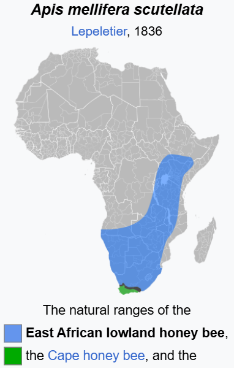

Wheres the promised land
Jerusalem=hill of peace, musalem=muslim person of peace
The land of Canaan is the land that the Israelites moved
into after leaving Egypt. Its vey clear that The plants and animals described in the bible belong to
African land inconsistent with desert of palestine currently occupied by fake jews.
The scripture says that the Israelites the land that the descendants of Canaan lived in, Canaan was a
son of Ham/Cham/Kemet/Kemi
kenana cattle, tribe of dan, butana, lake tana ethiopian jews
river sambation
sea of reeds
apiru hebrew montu heroes
S
Judah’s totem is a lion which has been appropriated by
European royal dynasties since the fall of Israel. This is why
there is a greek letter of a cross called “Tau” which means
lion in Sepedi and related languages because the Koine
Greek script itself was made in Alexandria, Egypt and their
writing systems are based on the truth that has been
manipulated. This is why one of the kings of the “New
Kingdom of Egypt” is called “Seqenenre Tao”
The letter “q” is an invention, t
the heiroglyphs
The letter “J” itself is a recent invention to distort the truth,
the etymology of Judah and Cheetah/Chitau are the same
because the so called “New Kingdom of Egypt” had tamed
cheetahs. This also explains why the latin academic term
for a cheetah is “Acinonyx jubatus”

The land of Canaan is described as being a land flowing
with “milk and honey” in Exodus 3:8t.
This is the range of the African honeybees:
Wikipedia will tell you:
“In terms of industrial honey
production, in its natural habitat and
the neo-tropics, the African bee
produces far more honey than its
European counterparts. It is unclear
if this is due to a superior nectar
gathering ability, lack of adaptability
in the European honey bees for
tropical environment, or both”
Arguably
the best cattle, the “Sanga Cattle”
and associated breeds are found in
the
same region. This is why
Americans imported the cattle
decades ago and set up a breeding society to create their
modern “Ankole-Watusi” one of which holds the record for
the largest horns of any cattle.
lions, leopards, rhinoceros(which is a unicorn) all mentioned
in scripture, then they will say there used to be all these
animals in the fake Israel and somehow they magically
disappeared, the same way the entire jewish nation
magically disappeared from Palestine, then they will use the
US/De Beers/Merchant funded wealth to try to convince you
that their land is blessed, they tried “reintroducing” ostriches
there but surprise surprise the population could not survive
in a random desert.
Where are the giraffes? Roman bibles had to translate
giraffe as “Camelopardalis” this is why in Afrikaans they still
say “kameelperd” as giraffe.
The Sycamore Fig Trees which have biblical significance is
found all over Africa, and is known as “mugumo” by the
Kikuyu who still associate it closely with the true god and
their culture.
 Acacia trees are mentioned throughout the bible. These are
acacia trees, they want you to believe these are somehow
associated with the fake israel.
Acacia trees are mentioned throughout the bible. These are
acacia trees, they want you to believe these are somehow
associated with the fake israel.
Moses did not cross a red sea, he went though a "Sea of reeds" i.e a marsh. This was approximately what
the greeks remamed "Lake Ptolemy"[] in NOrthwest Sudan.
mountains of the moon, rwenzori, kilmanjaro, chagga, sinai
eldad ha dani
map:
. Moab
This corresponds to the land of the “Moabites” described in
scripture theres are still descendants there that identify as
“Mzab” and they are associated with the archaeology of the
area. Their range was larger before the arab/islamic
expansion into Africa and Deuteronomy 2:29, 2:9 associate
them with Ar(5) the Israelites are described as having
passed them.
2. Jericho
Multiple places in this region of kenya named after the
original Jericho. Kerio Valley, Kericho etc . This is why
theres significant archaeological sites in this region called
Sirikwa.
3. Negev
The Negev refers to the region associated with the Niger
River which is what Niger and Nigeria are named after and
this is why the French/latin pronunciation of Niger is nearly
identical to Negev.
4. Soko/Sokoh
Soko corresponds to Sokoto located in Northern Nigeria
that the Sokoto caliphate was also named after.
5. Ar
Ar are the Aïr mountains located in Niger
6. Damascus
In North Eastern Nigeria is the region of Damasak that has
old archaeological sites, this also corresponds to the
Tuareg people who identify as “Tamasheq”.
7. Benjamin
The city of N’Djamena in Chad is named after Benjamin
and his tribe. Additionally the region of “Gilead” mentioned
in scripture likely corresponds to what we now call “Chad”.
Kadesh-Barnea is probably equivalent to Kanem-Bornu
which was north of here
8. Marah
Exodus says that Moses and the Israelites passed through
Marah after leaving Egypt, this is the Marrah mountains
located in Sudan.
9. Dan
The Butana region is named after Dan=Tana and his tribe,
this is why the jewish community in Ethiopia claim descent
from the tribe of Dan, which is also evidenced by Eldad ha
Dani from the 9th century. They moved south into Ethiopia
after the fall of the northern kingdom of Israel, this is why
the lake in Ethiopia where they are situated by is called
Lake Tana. This is also why the other name for Butana
cattle is Kenana cattle, kenana=Canaan, the land that
Israelites moved into. The neighbouring Amhara or Oromo
likely correspond to the Amorites.
10. Shiloh
Shiloh is often described as where Israelites congregate,
this makes sense considering it is situated close to the
northern kingdom of Israel and the southern kingdom of
Judah. This is why there was the Shilluk kingdom located
there, and in their oral history they record that their king
Nyikang split off from Duwadh=David who was based south
of them close to the great lakes region.
11. Lebanon
The scriptural Lebanon refers to a region in the forests of
the DRC, this is why throughout scripture it talks about the
“Cedars of Lebanon” and this is why the fake Lebanon has
a tree on their flag. The DRC literally has a rainforest while
Lebanon is mostly desert, let’s not be stupid. This is what
the Luba Kingdom that was located there was named after.
The bible actually prophecies this deception in Ezekiel 17
Heres an extract:
“And the word of the LORD came unto me, saying,
Son of man, put forth a riddle, and speak a parable unto the
house of Israel;
And say, Thus saith the Lord GOD; A great eagle with
great wings, longwinged, full of feathers, which had divers
colours, came unto Lebanon, and took the highest
branch of the cedar:
He cropped off the top of his young twigs, and carried it into
a land of traffick; he set it in a city of merchants.”
The fake Lebanon historically during Israels time, especially
the city of Tyre, has been a land of merchants
corresponding to the Phoenicians who established a
maritime empire all around the mediterranean and after
being a part of the manipulation of writing systems and truth
they relocated to Italy and became the Venetians.
12. Horeb
The mountain that Moses went up to speak to god when
there was so much smoke that the Israelites were scared,
was Mt Kilimanjaro this is why there is a town there called
“Moshi” and is also why “Moshi” means smoke in many
Israelite languages.
13. Esau/Edom
Esau is described as the founder of the Edomites. This
corresponds to the Sao Civilisation that was located around
lake chad who later became the Hausa that mostly adopted
Islam, the Hausa are the largest non-arabic ethnicity in
Africa due to the divisions of the other ethnicities. Theres
groups in western Nigeria who identify as “Idoma” and
“Edo” and who had the Edo kingdom. They also might be
related to the Ibom Kingdom. In the oral history of the
Hausa they document how their founder came from Egypt
this is consistent with scripture since Esau and the
Edomites are described as relatives of the Israelites.
14. DarDaju
This was essentially the “frontline” of Israel, whether or not
Jerusalem refers to a specific town rather than a region is
debatable, but the main city of Jerusalem was likely here. If
not Jerusalem then the northern kingdom of Israels capital
recorded as Samaria was here. There is very significant
archaeological sites here that have been damaged and
looted for centuries and people are unable to further
investigate due to the ongoing conflict in Darfur. Darfur was
previously called DarDaju which means “home of the jew”,
this is the name applied by the foreign conquerors before
they put more effort into changing the story.
15. Portugese “Judah”
This was a major source of slaves for the Portugese, this is
why they called it “Juda” because they knew where the
slaves were coming from.
One of their historians who converted from Islam to
Christianity and changed his name from “al-Hasan
Muhammad al-Wazzan al-Fasi” to “Johannes Leo
Africanus”. ( who was likely instrumental in forging
Portugese history) claimed that the jews were south of
Egypt, heres an excerpt from the wikipedia detailing the
history of the term “Kaffir”:
“The 16th century explorer Leo Africanus described
the Cafri as non-Islamic “negroes” and one of five principal
population groups in Africa. According to him, they were "as
blacke as pitch, and of a mightie stature, and (as some
thinke) descended of the Jews; but now they are idolators."
Leo Africanus identified the Cafri's geographical heartland
as being located in remote southern Africa, an area which
he designated as Cafraria.”
I hope you see the game they’ve been playing. Switch
religions, create new religions, change names, change the
narrative, use the same words, target the same people.
16. Gad
The tribe of gad was located in this region, Eri is listed as a
son of gad in Genesis 46:16 who was the founder of the
Igbo people, another son of Gad is recorded as Arodi
whose descendants likely formed the Arochukwu .
17. Gilgal
This corresponds to Gilgil located in Kenya.
18. Ophir
Ophir is described as the location of Solomons gold mines
corresponding to the gold mines of Great Zimbabwe,
Souphír is recorded as another variant of the name which
corresponds to port of Sofala located on the coast of
Mozambique. Vasco de Gama’s companion Tome Lopes
reasoned that Ophir would have been the ancient name
for Great Zimbabwe, the main center of southern
african trade in gold. Even the Portuguese believed this
hence why they made sure to take control of the trade
routes from the Arabs and then collapse the state that was
based there by funding warlords known as Prazos with
slave armies and aiding anyone within Zimbabwe who
wanted to overthrow the ruling dynasties.
19. Simeon
Simeon is described as one of the tribes of Israel this
corresponds to the kingdom of Simien that was located in
Ethiopia. The Book of Judith/Gudit is scripture that takes
place here.
20. Sheba
Queen Sheba, her state and associated descendants were
on both sides of the Arabian Sea (Red Sea). They
disconnect it in their historiography of the region, so you
have the mysterious “D’mt” culture located in Ethiopia the
Jewish Himyarite kingdom in Yemen and the “Sabaens”
these all correspond to the same entity, this is why their
kingdom is described in scripture as having control of a lot
of trade. The Solomonic dynasty of Ethiopia claim to be
descended by the son of Sheba and Solomon
21. Hor
There is a south Horr and north Horr in Kenya, this region
corresponds to the scriptural Hor. Hor in Hebrew means mountain.
22. Jewish presence
The Portugese called the coast here “Gulf de Jude” . The
europeans recorded that there was a jewish community in
the republic of Congo and Gabon, they’ve tried to make it
seem like they came all the way from Spain and assimilated
into the “native” groups so thats why the jews disappeared.
Meanwhile the Bamileke, Bassa and related groups there
are well aware of their jewish identity .
23. Levites
The Levites described as the priestly tribe in the bible
correspond to the Lemba, this is why they are found
throughout southern Africa, in Kongo, leading slave
rebellions and in the regions surrounding Zimbabwe and
have historically had close ties to the royalty of various
groups, this is proven by their oral narrative and the
genetics of the Buba clan.
If you think something in your bible contradicts what Im
saying you should investigate how the bible has been
translated and what the Hebrew words represented.
blueletterbible.com allows you to look at english scripture
side by side with the Hebrew words and then you can see
how the corresponding Hebrew words are used in different
contexts to better understand the original contextual/
connotational meaning. The current alphabet considered as
Hebrew is not the original script so there is also an
additional layer of manipulation, and there are no vowels in
the script so the vowels are the easiest for them to make
up.